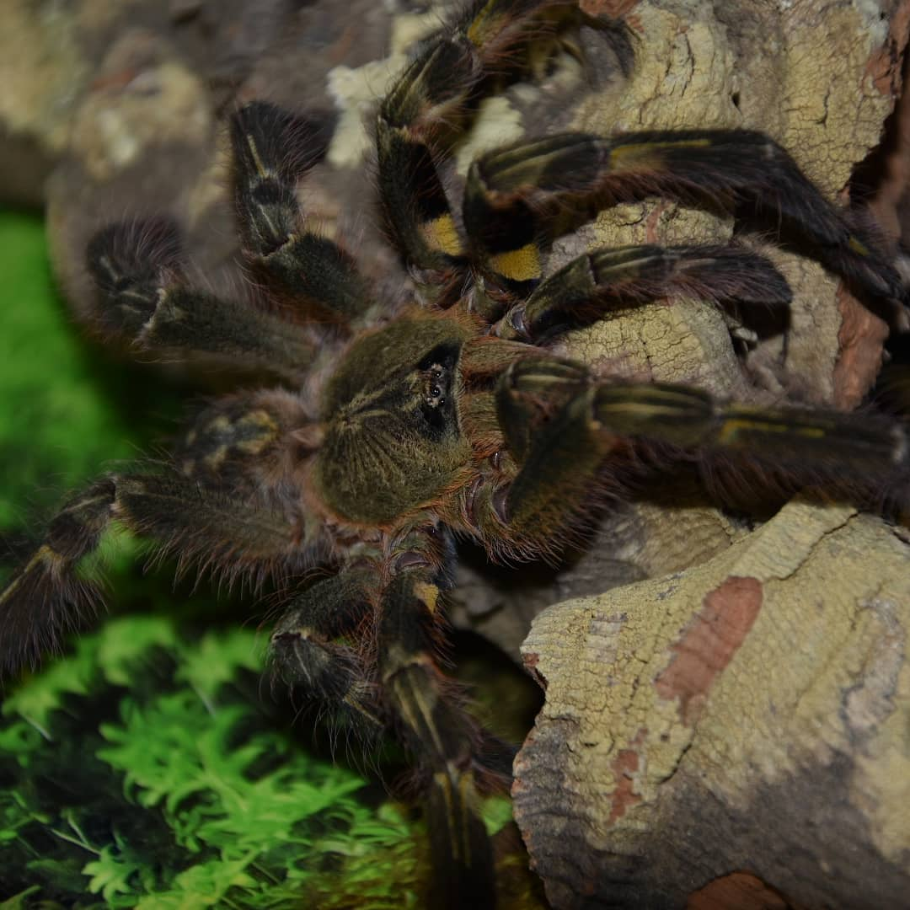
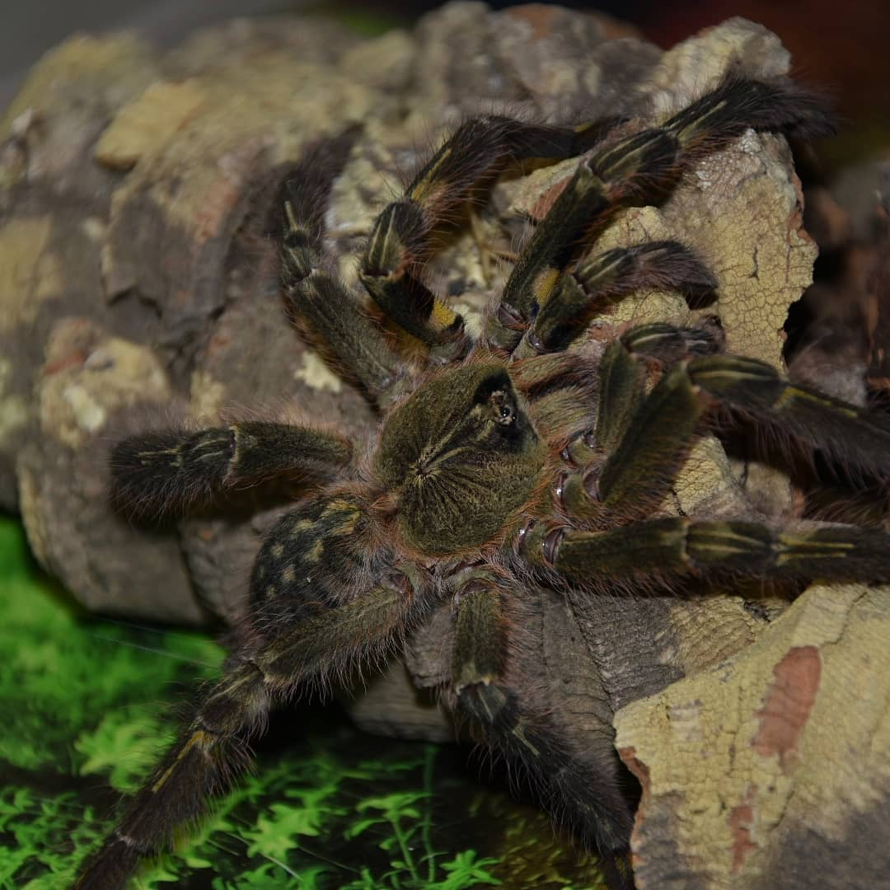

Poecilotheria rufilata - Redslate Ornamental
Wygląd i rozmiary
Samice tego gatunku dorastają do około 8 cm długości ciała (DC), samce mniejsze około 6 cm DC. Rozpiętość odnóży dochodzi do około 22 cm. Młode osobniki są głównie szare. Dorosłe osobniki mają rzucający się w oczy oliwkowy kolor. Na karapaksie charakterystyczne czarne okulary. Ornamenty na kończynach i odwłoku koloru żółtego. Wszystkie odnóża w żółto-czarne pasy. Nogogłaszczki z rudami włoskami.
Długość życia
Samice dożywają do 15 lat, samce padają około pół roku po ostaniej wylince.
Występowanie i biotop
Na wolności występuje na terenach górzystych lasów Indi (Azja).
Temperatura i wilgotność
Za dnia utrzymywać temperaturę 25-28 stopni , nocami spadki do 22 stopni. Wilgotność powinna wynosić 70-80%.
Cechy szczególne
Gatunek nadrzewny, szybki, może bywać defensywny, potrafi skakać na krótkie dystanse.Nie wyczesuje włosków parzących z odwłoka. Silnie jadowity. Polecany dla zaawansowanych hodowców. Polecany do hodowli grupowej. Znajduje się na liście CITES.

